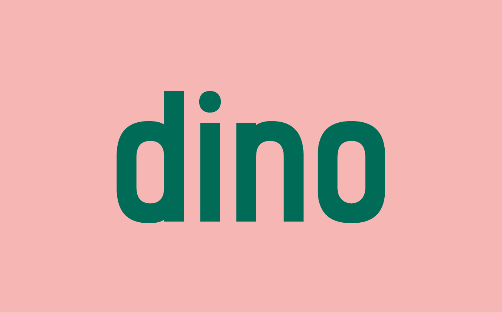
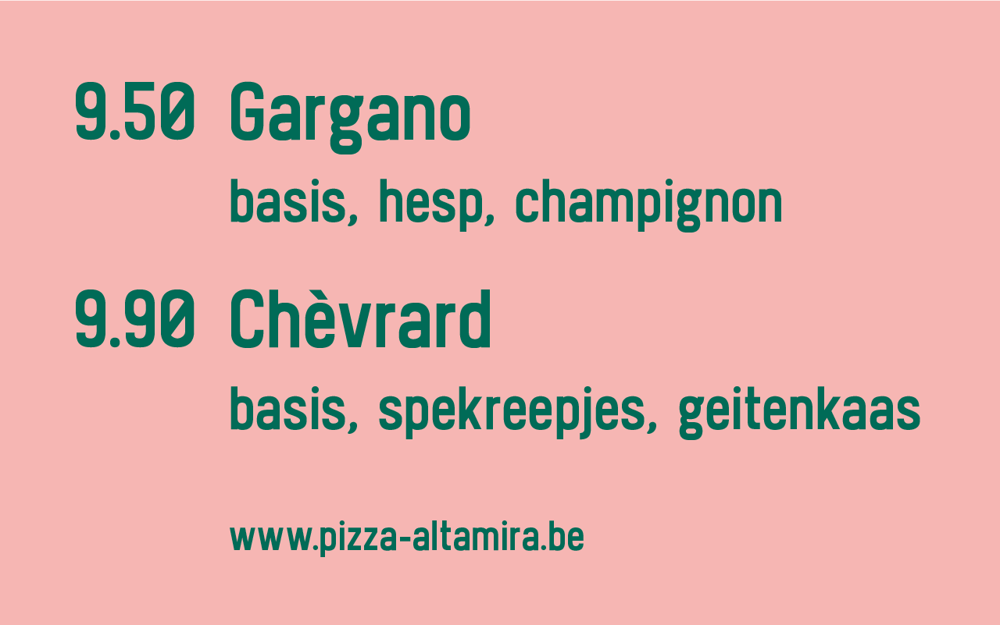
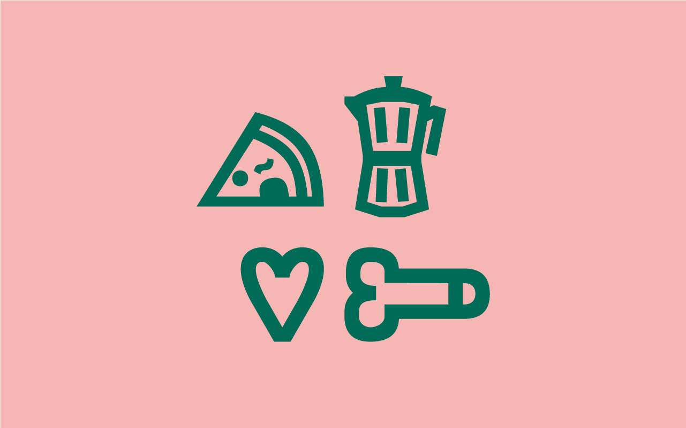
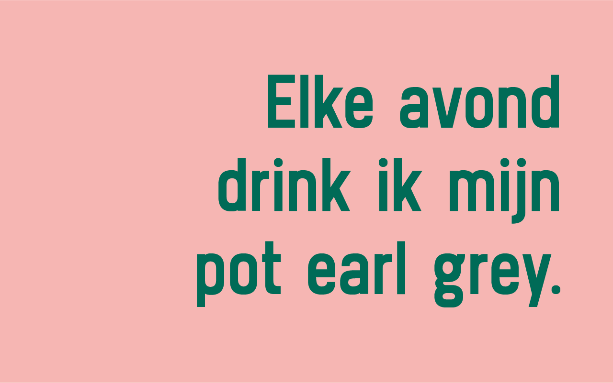
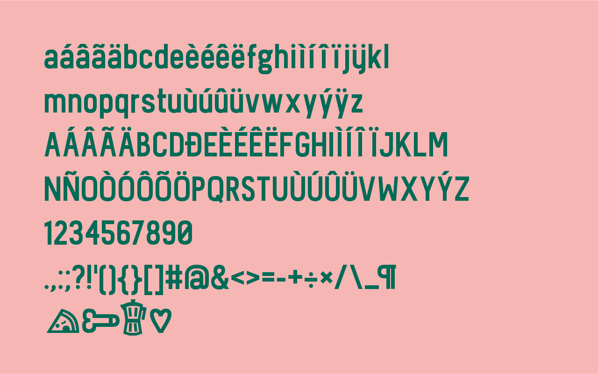

Wout Neirynck
Bachelor in Visual Arts, Graphic Design
Based in Brussels
Lover of pizza & coffee. But not together.
ahoi@woutneirynck.be (non-existing, you spambot)






Bachelor in Visual Arts, Graphic Design
Based in Brussels
Lover of pizza & coffee. But not together.
ahoi@woutneirynck.be (non-existing, you spambot)